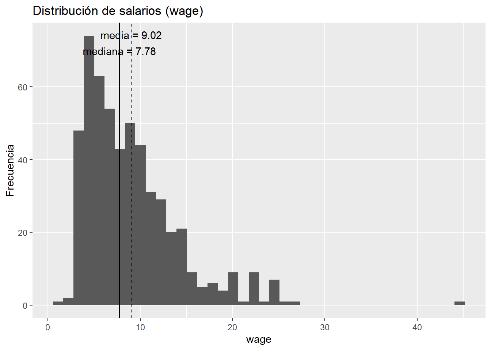
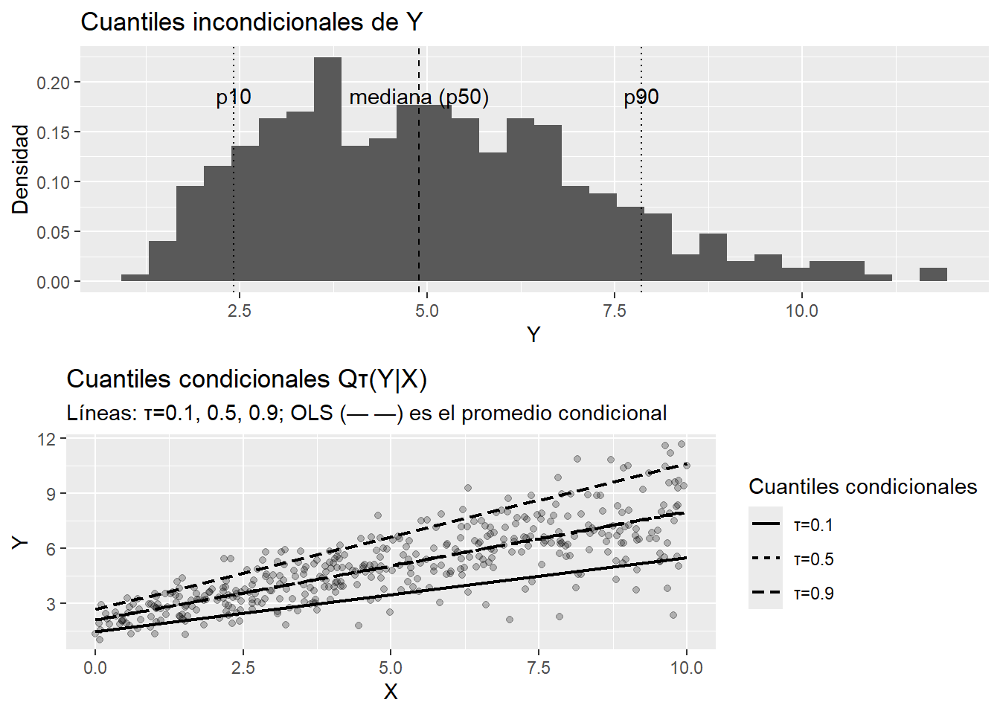
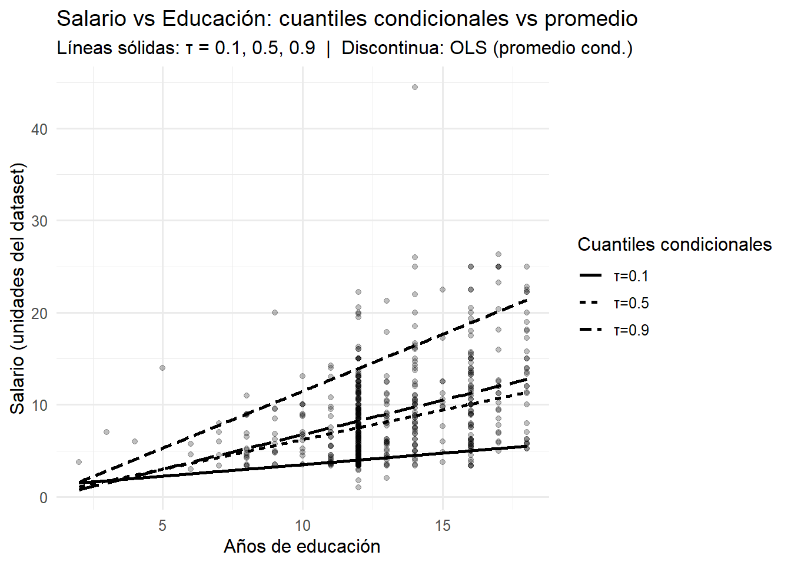
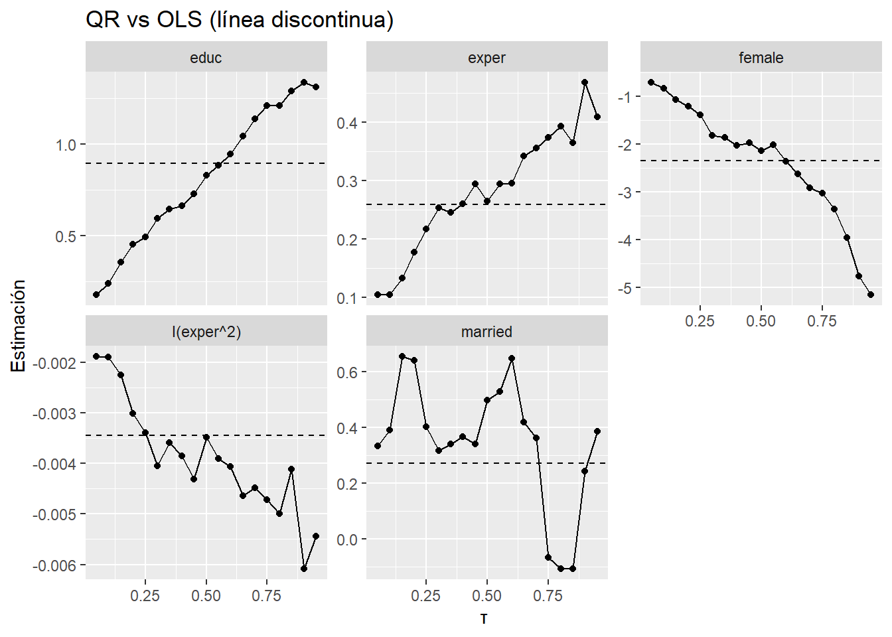
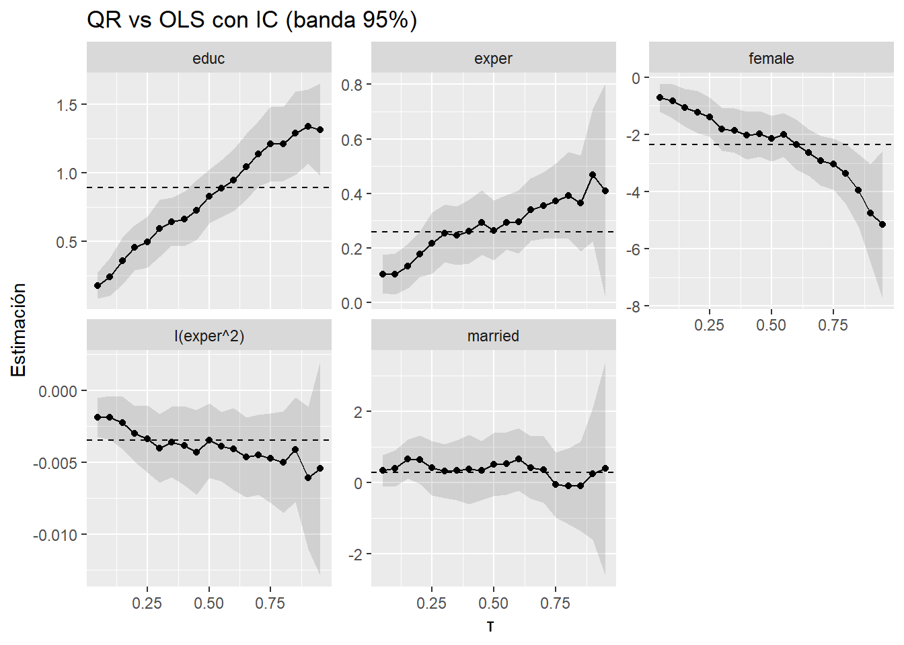
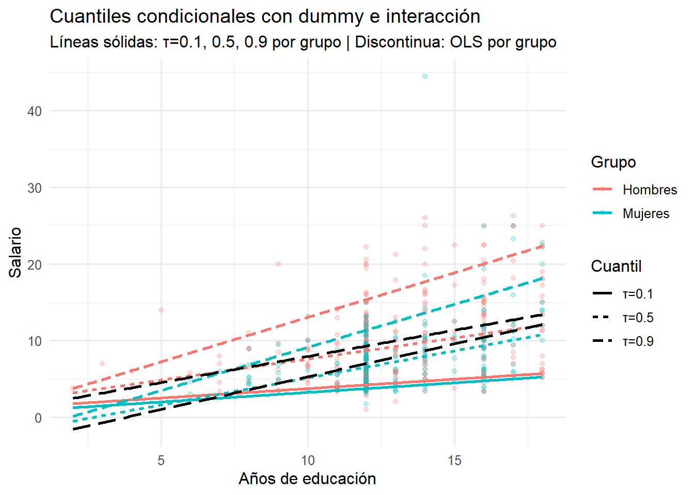

Regresión Cuantil
1 Materiales
- R ≥ 4.1 y paquetes:
quantreg,ggplot2,dplyr,AER,broom,purrr,tidyr,scales. - Dataset de ejemplo:
AER::CPS1985(salarios en EE. UU. 1985).
2 Introducción
La idea clave
La media resume el centro, pero no la historia completa.
La regresión cuantil (QR) pregunta: ¿cómo cambia Y en distintos puntos de su distribución (p.10, p.50, p.90)?
Útil cuando los extremos importan, hay asimetrías, o efectos heterogéneos.
2.1 ¿Por qué no basta la media?
2.1.1 Cafetería (espera en minutos) — ¿qué prometo?
Datos (10 estudiantes, ordenados): 2, 3, 3, 4, 4, 4, 5, 5, 6, 12
media: (2+3+3+4+4+4+5+5+6+12) / 10 = 4.8 min
mediana (p50): promedio del 5º y 6º = (4+4)/2 = 4 min
p90: posición ceil(0.90·10)=9 → 9º dato = 6 min
qué revela esto (en lenguaje de decisión):
si prometes “5 minutos” porque la media es 4.8, 1 de cada 10 se quedará ~12 min (muy insatisfecho).
el p90=6 te dice que para cumplir al 90% debes dimensionar personal para ≤6 min.
la mediana=4 no captura la “cola” de 12.
2.1.2 Entregas e-commerce (días)
Zona urbana (10 pedidos): 2, 2, 3, 3, 3, 3, 4, 4, 4, 5
media = 33/10 = 3.3 días
mediana = (5º y 6º) = (3+3)/2 = 3
p90 = posición 9 → 4 días
Zona periférica (10 pedidos): 2, 3, 3, 3, 4, 4, 5, 6, 8, 9
media = 47/10 = 4.7 días
mediana = (4+5)/2 = 4
p90 = posición 9 → 8 días
qué revela esto:
si solo miras la media general (3.3 vs 4.7), ves “peor periférica”.
el p90 expone el dolor del cliente: urbana 4 vs periférica 8 (cola larga).
para Servicios coherentes: prometer p80/p90 por zona, no “3 días” para todos.
2.1.3 retail (promo 2×1, uplift (incremento de ventas) % por tienda)
Tiendas top (10 valores): 20, 25, 30, 35, 40, 45, 50, 55, 60, 65
- media = 42.5% · mediana = 42.5% · p90 (pos. 9) = 60%
Tiendas bajas (10 valores): 0, 0, 2, 3, 4, 5, 6, 7, 8, 10
- media = 4.5% · mediana = 4.5% · p90 (pos. 9) = 8%
qué revela esto:
misma promo, efecto muy desigual: en top, p90=60%; en bajas, p90=8%.
decisión: mantener 2×1 en top; en bajas, probar precio psicológico/pack o cambiar categoría.
plan de inventario según percentiles, no solo según media global.
2.2 Señales de que necesitas cuantiles
Distribución sesgada o con colas pesadas (tiempos, ingresos, pérdidas).
Heterogeneidad: el efecto de X no es el mismo para todos.
Interesa riesgo (colas altas/bajas), equidad (quién gana/perde más) o SLAs (percentiles).
Actividad 1: “¿Dónde importan los extremos?”
En tu proyecto (TG), escribe 2 variables donde el p.90 o p.10 sea clave.
¿Qué decisión cambia si miras p.90 en lugar de la media?
2.3 ¿Cuándo la media “miente”?
¿Por qué la media es insuficiente?
Pregunta:
Si educación sube un año, ¿esperas el mismo cambio salarial en p.10 y p.90?
Si no, ¿qué modelo te deja verlo?
2.3.1 Pasamos al mundo “condicional”
Hasta ahora: miramos percentiles “a secas” (toda la muestra) o por grupos (zona, tipo de tienda).
Idea puente: en lugar de partir en 20 grupos (pierdes potencia), queremos ver cómo cambia un percentil cuando cambian varias X a la vez (distancia, día, tráfico…), manteniendo las demás constantes.
Eso es lo que luego llamaremos “cuantil condicional” (p. ej., p90 del tiempo de entrega dado distancia=5km, viernes, lluvia=1, …). no es un promedio: es un percentil “con condiciones”.

2.3.2 Expectativas
Entender qué estima un cuantil y cómo leer \(\beta{(\tau)}\)
Comparar QR vs OLS con un dataset real.
Llevarte gráficos de perfiles listos para reportar a un decisor.
Important
-La media puede ocultar brechas y riesgos.
Los cuantiles revelan la heterogeneidad de efectos.
Decisiones reales se anclan en percentiles (Ej: Riesgo).
3 Especificación y estimación
Definición de cuantil (\(\tau\)):
El cuantil (\(\tau\ \in (0,1)\)) de \((Y)\) es el valor \((q_{\tau})\) tal que
\[\Pr(Y \le q_\tau) = \tau\]
QR vs OLS:
- OLS minimiza \((\sum u^2)\) y estima el promedio condicional.
- QR minimiza \((\sum \rho_\tau(u))\) y estima cuantiles condicionales, permitiendo heterogeneidad de efectos a lo largo de la distribución.
3.1 Modelo base:
Imagina que queremos entender cómo cambia el salario típico de personas con salarios bajos, medios y altos cuando varían sus características. En vez de preguntar “¿cuánto sube el salario en promedio?”, este modelo pregunta: “¿cuánto cambia el percentil τ del salario (p.10, p.50, p.90) dado años de educación (educ), experiencia (exper), posibles rendimientos decrecientes (exper²) y dos indicadores: female (=1 si mujer) y married (=1 si casado/a), manteniendo lo demás constante?”. Así podremos ver, por ejemplo, si un año extra de educación empuja mucho el salario en la cola alta pero poco en la baja, o si la brecha por género es mayor entre quienes menos ganan que entre quienes más ganan. Al final, estamos estimando cómo se mueve un cuantil específico del salario cuando cambian estos factores.
\[Q_\tau(\text{wage}\mid X) = \beta_0(\tau) + \beta_1(\tau)\text{educ} \]
Code
# (Opcional) #| echo: false
# Datos mínimos: salario ~ educación
dat <- CPS1985 %>%
dplyr::transmute(salario = wage, educ = education) %>%
tidyr::drop_na()
# Cuantiles a mostrar
taus <- c(0.1, 0.5, 0.9)
# Ajustes QR y OLS
fits_qr <- lapply(taus, function(t) quantreg::rq(salario ~ educ, tau = t, data = dat))
ols_min <- lm(salario ~ educ, data = dat)
# Malla para predecir
xg <- dplyr::tibble(educ = seq(min(dat$educ), max(dat$educ), length.out = 200))
# Predicciones
pred_qr <- dplyr::bind_rows(
lapply(seq_along(fits_qr), function(i){
dplyr::tibble(
educ = xg$educ,
salario = predict(fits_qr[[i]], xg),
tau = paste0("τ=", taus[i])
)
})
)
pred_ols <- dplyr::tibble(
educ = xg$educ,
salario = predict(ols_min, xg)
)
# Gráfico: nube de puntos + líneas τ + OLS discontinua
ggplot2::ggplot(dat, ggplot2::aes(educ, salario)) +
ggplot2::geom_point(alpha = 0.25) +
ggplot2::geom_line(data = pred_qr,
ggplot2::aes(educ, salario, linetype = tau),
linewidth = 1) +
ggplot2::geom_line(data = pred_ols,
ggplot2::aes(educ, salario),
linetype = "longdash", linewidth = 1) +
ggplot2::scale_linetype_discrete(name = "Cuantiles condicionales") +
ggplot2::labs(
title = "Salario vs Educación: cuantiles condicionales vs promedio",
subtitle = "Líneas sólidas: τ = 0.1, 0.5, 0.9 | Discontinua: OLS (promedio cond.)",
x = "Años de educación", y = "Salario (unidades del dataset)"
) +
ggplot2::theme_minimal(base_size = 12)
3.2 Modelo completo:
\[Q_\tau(\text{wage}\mid X) = \beta_0(\tau) + \beta_1(\tau)\text{educ} + \beta_2(\tau)\text{exper} + \beta_3(\tau)\text{exper}^2 + \beta_4(\tau)\text{female} + \beta_5(\tau)\text{married}.\]
3.2.1 Regresión Lineal
Code
form <- wage ~ educ + exper + I(exper^2) + female + married
ols <- lm(form, data = df)
summary(ols)$coefficients Estimate Std. Error t value Pr(>|t|)
(Intercept) -4.719614820 1.192863000 -3.956544 8.643303e-05
educ 0.894335208 0.079711488 11.219653 2.390996e-26
exper 0.259168141 0.056593841 4.579441 5.821190e-06
I(exper^2) -0.003447569 0.001222285 -2.820593 4.973802e-03
female -2.341662209 0.385343774 -6.076813 2.349450e-09
married 0.272230525 0.429970994 0.633137 5.269183e-01- Educación (educ): +0.894
Cada año adicional de educación se asocia con +0.894 unidades de salario (p. < 0.001; IC95% ≈ [0.74, 1.05]), manteniendo lo demás constante.
Ej.: +4 años ⇒ ≈ +3.58 unidades de salario.
- Experiencia (exper): +0.259 y exper^2: −0.00345
La experiencia aumenta el salario, pero con rendimientos decrecientes (el término cuadrático negativo lo indica).
Punto de “techo” aproximado: ≈ 37.6 años de experiencia (después, el efecto marginal podría volverse nulo/menor). En el rango típico (p. ej., 0–30 años) el efecto sigue siendo positivo.
Significativos ambos (p. < 0.01).
La experiencia sí paga, pero cada año paga un poco menos que el anterior. En nuestro modelo el efecto marginal de un año extra es:
Efecto marginal:
\[ \frac{\partial \widehat{wage}}{\partial\, exper} = \beta_{2} + 2\beta_{3}\, exper. \]
\[ \frac{\partial \widehat{wage}}{\partial\, exper} = 0.259168 + 2(-0.003447569)\, exper = 0.259168 - 0.006895138\, exper. \]
Eso significa que al inicio el aumento es grande y luego se aplana: con 5 años, un año adicional suma ≈ 0.225 unidades de salario; con 10 años, 0.190; con 20, 0.121; con 30, 0.052. El ‘punto de techo’ está cerca de 37.6 años de experiencia: antes de ese valor el efecto sigue siendo positivo (aunque decreciente) y después prácticamente se vuelve nulo. La forma cóncava (lineal positivo y cuadrático negativo) es significativa estadísticamente (p<0.01), así que la evidencia respalda estos rendimientos decrecientes.
- Mujer (female=1): −2.342
A mismo nivel de educación y experiencia, el salario de mujeres es ≈ 2.34 unidades menor que el de hombres (p. < 0.001; IC95% ≈ [−3.10, −1.59]).
Esto es una brecha promedio; no dice si la brecha es mayor en salarios bajos o altos (eso lo veremos con cuantiles).
- Casado/a (married=1): +0.272
Diferencia no significativa (p = 0.527; IC95% cruza 0). Con estos datos, no hay evidencia de efecto promedio del estado civil sobre el salario tras controlar por las demás variables.
- Intercepto: −4.72
Es el salario “predicho” cuando educ=0, exper=0, female=0, married=0. No suele ser interpretable si esos valores no aparecen o no son realistas en la muestra; úsalo solo como ancla del modelo.
3.2.2 Regresión Cuantílica
Code
# Estimamos para varios cuantiles con errores estándar (nid)
taus <- c(0.1, 0.25, 0.5, 0.75, 0.9)
qr_fits <- rq(form, tau = taus, data = df)
# Tabla ordenada de coeficientes con SE/t/p
summary(qr_fits, se = "boot")
Call: rq(formula = form, tau = taus, data = df)
tau: [1] 0.1
Coefficients:
Value Std. Error t value Pr(>|t|)
(Intercept) 0.47000 0.87092 0.53966 0.58966
educ 0.24000 0.06507 3.68810 0.00025
exper 0.10500 0.03412 3.07754 0.00220
I(exper^2) -0.00189 0.00074 -2.57561 0.01028
female -0.83362 0.28978 -2.87671 0.00418
married 0.39119 0.24976 1.56627 0.11789
Call: rq(formula = form, tau = taus, data = df)
tau: [1] 0.25
Coefficients:
Value Std. Error t value Pr(>|t|)
(Intercept) -2.31409 1.29995 -1.78013 0.07563
educ 0.49369 0.09301 5.30818 0.00000
exper 0.21736 0.04994 4.35280 0.00002
I(exper^2) -0.00339 0.00105 -3.24054 0.00127
female -1.39068 0.37454 -3.71302 0.00023
married 0.40242 0.36173 1.11249 0.26643
Call: rq(formula = form, tau = taus, data = df)
tau: [1] 0.5
Coefficients:
Value Std. Error t value Pr(>|t|)
(Intercept) -4.79995 1.29856 -3.69636 0.00024
educ 0.82908 0.10025 8.26981 0.00000
exper 0.26471 0.05611 4.71793 0.00000
I(exper^2) -0.00348 0.00135 -2.58831 0.00991
female -2.13915 0.38771 -5.51741 0.00000
married 0.49856 0.43584 1.14390 0.25318
Call: rq(formula = form, tau = taus, data = df)
tau: [1] 0.75
Coefficients:
Value Std. Error t value Pr(>|t|)
(Intercept) -7.70053 1.88600 -4.08300 0.00005
educ 1.21110 0.12943 9.35704 0.00000
exper 0.37354 0.06860 5.44497 0.00000
I(exper^2) -0.00472 0.00158 -2.99676 0.00286
female -3.02967 0.55129 -5.49561 0.00000
married -0.06590 0.52429 -0.12569 0.90002
Call: rq(formula = form, tau = taus, data = df)
tau: [1] 0.9
Coefficients:
Value Std. Error t value Pr(>|t|)
(Intercept) -6.64650 2.30804 -2.87971 0.00414
educ 1.33774 0.14798 9.03970 0.00000
exper 0.46759 0.12185 3.83753 0.00014
I(exper^2) -0.00609 0.00252 -2.42007 0.01585
female -4.75728 0.85870 -5.54009 0.00000
married 0.24272 0.94953 0.25562 0.79834Errores estándar: en práctica es habitual usar bootstrap.
4 Interpretación
Idea clave: los efectos no son iguales a lo largo de la distribución del salario. En los gráficos, la línea discontinua es OLS (promedio) y los puntos/curvas son los cuantiles (0.10, 0.25, 0.50, 0.75, 0.90).
4.1 Mensajes principales
Educación: su “efecto” crece hacia los salarios altos.
- Bajo \((\tau= 0.10):\) ~0.24
- Medio \((\tau=0.50):\) ~0.83
- Alto \((\tau=0.90):\) ~1.34
OLS (~0.89) sobreestima el efecto en la base y subestima en la cúpula. → La educación rinde más entre quienes ya están arriba de la distribución salarial.
- Bajo \((\tau= 0.10):\) ~0.24
Experiencia: sí paga y paga más en los cuantiles altos, pero con rendimientos decrecientes (término cuadrático < 0 en todos los \(\tau\)).
- Efecto lineal: 0.11 → 0.22 → 0.26 → 0.37 → 0.47 (de \(\tau=0.10\) a \(\tau=0.90\)).
- Curvatura (decreciente): −0.0019 → −0.0034 → −0.0035 → −0.0047 → −0.0061 (más “aplanada” arriba).
OLS (~0.26; −0.0035) sobreestima el retorno al inicio de la carrera y subestima el retorno en la parte alta.
La experiencia impulsa más a quienes ya están mejor posicionados, aunque cada año adicional añade menos que el anterior.
- Efecto lineal: 0.11 → 0.22 → 0.26 → 0.37 → 0.47 (de \(\tau=0.10\) a \(\tau=0.90\)).
Mujer: brecha negativa en todos los cuantiles y se agranda arriba.
- \(\tau=0.10:\) −0.83
- \(\tau=0.50:\) −2.14 (cerca a OLS: −2.34)
- \(\tau=0.90:\) −4.76
→ La penalización salarial para mujeres es moderada en la base y muy fuerte en la cúpula. OLS oculta esta ampliación de la brecha en la parte alta.
- \(\tau=0.10:\) −0.83
Casado/a: coeficiente inestable y no significativo en todos los \(\tau\).
→ No hay evidencia robusta de efecto salarial asociado al estado civil.Significancia (p<0.05):
- Educación, experiencia y experiencia^2: significativos en todos los cuantiles reportados.
- Mujer: significativo y negativo en todos.
- Casado/a: no significativo.
- Educación, experiencia y experiencia^2: significativos en todos los cuantiles reportados.
4.2 Qué revela QR que OLS no muestra
- Heterogeneidad de retornos: educación y experiencia rinden distinto según el lugar en la distribución del salario.
- Brecha de género no uniforme: la diferencia mujeres–hombres se ensancha en la parte alta.
- Política y gestión:
- Formación/posgrado puede tener mayor impacto en trayectorias de alta remuneración (donde la prima por educ. es mayor).
- La experiencia debe complementarse con habilidades que eviten la “meseta” (decrecientes) en etapas avanzadas.
- Acciones de equidad de género necesitan foco especial en niveles salariales altos.
- Formación/posgrado puede tener mayor impacto en trayectorias de alta remuneración (donde la prima por educ. es mayor).
- Con QR vemos quién se beneficia más. La educación empuja a todos, pero mucho más a quienes ya están arriba.
- La experiencia ayuda en toda la distribución, aunque cada año suma menos; y su empuje es más fuerte en los cuantiles altos.
- La brecha por género existe en toda la distribución y se duplica o triplica arriba.
- OLS resume en un promedio y esconde estas diferencias. QR nos permite diseñar mejores decisiones de carrera y de política salarial.”
4.3 Apoyo visual (cómo leer las facetas)
- Si la curva del cuantil está por encima de la línea OLS: el promedio
subestimael efecto en ese tramo.
- Si está por debajo: el promedio
sobreestima.
- La pendiente y la forma de cada curva cuentan cómo cambia el efecto a lo largo de los cuantiles (base → centro → cúpula).
Contraste con OLS:
Code
G <- seq(0.05, 0.95, by = 0.05) # vector de cuantiles: 0.05, 0.10, ..., 0.95
fitsG <- purrr::map(G, ~ rq(form, tau = .x, data = df))
# ajusta un modelo de regresión cuantil (rq) para cada τ de G; devuelve una lista de modelos
prof <- purrr::map2_dfr(fitsG, G, ~ broom::tidy(.x) %>% mutate(tau = .y))
# convierte cada modelo en una tabla "ordenada" (term, estimate, std.error, etc.)
# y le añade la columna τ correspondiente; map2_dfr recorre en paralelo (modelo, τ)
# y une todo en un solo data frame apilando por filas
coef_keep <- c("educ","exper","I(exper^2)","female","married")
# nombres de los coeficientes que quieres graficar (excluye el intercepto)
prof2 <- prof %>% dplyr::filter(term %in% coef_keep)
# filtra la tabla para quedarse solo con esos términos
ols_coef <- broom::tidy(ols) %>%
dplyr::filter(term %in% c("(Intercept)", coef_keep)) %>%
dplyr::transmute(term, ols = estimate)
# extrae de OLS los coeficientes; filtra a los mismos términos (y opcionalmente el intercepto)
# y renombra estimate -> ols para usarlo como referencia horizontal
prof_ols <- prof2 %>% dplyr::left_join(ols_coef, by = "term")
# une (merge) por nombre de término: ahora cada fila de QR tiene la columna 'ols' del mismo término
ggplot(prof_ols, aes(tau, estimate)) + # eje x: cuantil τ; eje y: estimación del coeficiente
geom_line() + geom_point() + # curva y puntos de QR a lo largo de τ
geom_hline(aes(yintercept = ols), linetype = "dashed") +
# línea horizontal discontinua con el valor OLS (una por término)
facet_wrap(~ term, scales = "free_y") + # una faceta por coeficiente; escala Y libre en cada panel
labs(title = "QR vs OLS (línea discontinua)", x = "τ", y = "Estimación")
COn intervalos de confianza
Code
# Ajuste QR (si ya lo tienes, omite esto)
qr_fit <- quantreg::rq(form, tau = G, data = df)
# Coefs OLS para la línea discontinua
ols_coef <- broom::tidy(ols) |>
dplyr::filter(term %in% c("(Intercept)", coef_keep)) |>
dplyr::transmute(term, ols = estimate)
# Coefs QR con IC (95%). se.type = "nid" es rápido y estándar.
# Si quieres bootstrap: se.type="boot", R=500, bsmethod="xy"
prof_ci <- broom::tidy(
qr_fit,
se.type = "boot",
conf.int = TRUE,
conf.level= 0.95
) |>
dplyr::filter(term %in% coef_keep) |>
dplyr::left_join(ols_coef, by = "term")
library(ggplot2)
ggplot(prof_ci, aes(tau, estimate)) +
geom_ribbon(aes(ymin = conf.low, ymax = conf.high), alpha = 0.15) +
geom_line() + geom_point() +
geom_hline(aes(yintercept = ols), linetype = "dashed") +
facet_wrap(~ term, scales = "free_y") +
labs(title = "QR vs OLS con IC (banda 95%)", x = "τ", y = "Estimación")
Supuestos
OLS requiere exogeneidad y (para errores clásicos) homocedasticidad; QR es más flexible frente a heterocedasticidad y no-normalidad, pero exige que el cuantil esté bien especificado y cuidar la inferencia (SE/bootstraps) y los cuantiles extremos.
5 Interacción
La interacción en regresión cuantil es clave cuando sospechamos que el efecto de una variable (p. ej., educación) no es igual entre grupos (p. ej., hombres vs. mujeres) y además cambia a lo largo de la distribución del resultado. Sin interacción, el modelo impone pendientes paralelas y la diferencia entre grupos se reduce a un simple “desplazamiento”, lo que aplasta heterogeneidades reales (por ejemplo, que la educación “rinda más” en la cola alta para un grupo). Al permitir interacción dentro de cada cuantil, medimos modificación del efecto específica por tramo (τ=0.1, 0.5, 0.9, etc.), evitamos conclusiones engañosas basadas en promedios y obtenemos evidencia accionable para política salarial y equidad: quién gana más con un año adicional y en qué parte de la distribución ocurre.
Code
# (Opcional) #| echo: false
# 1) Datos + creación robusta de 'female' (0/1)
data("CPS1985", package = "AER")
fcol <- intersect(c("female","sex","gender"), names(CPS1985))[1]
if (is.na(fcol)) stop("No se encontró ninguna columna female/sex/gender en CPS1985.")
to01 <- function(x){
if (is.numeric(x)) return(as.integer(x > 0))
x <- tolower(as.character(x))
as.integer(x %in% c("f","female","mujer","1","yes","y","true","t"))
}
dat <- CPS1985 |>
dplyr::transmute(
wage,
educ = education,
female = to01(.data[[fcol]])
) |>
tidyr::drop_na() |>
dplyr::mutate(grupo = factor(female, levels = c(0,1),
labels = c("Hombres","Mujeres")))
taus <- c(0.1, 0.5, 0.9)
# 2) Modelo con interacción: wage ~ educ * female
fits <- lapply(taus, function(t) quantreg::rq(wage ~ educ * female, tau = t, data = dat))
# 3) Malla de predicción por grupo
xg <- dplyr::tibble(educ = seq(min(dat$educ), max(dat$educ), length.out = 200))
newM <- dplyr::mutate(xg, female = 0)
newF <- dplyr::mutate(xg, female = 1)
pred <- dplyr::bind_rows(lapply(seq_along(fits), function(i){
dplyr::bind_rows(
dplyr::tibble(educ = xg$educ, wage = predict(fits[[i]], newM), tau = paste0("τ=",taus[i]), grupo="Hombres"),
dplyr::tibble(educ = xg$educ, wage = predict(fits[[i]], newF), tau = paste0("τ=",taus[i]), grupo="Mujeres")
)
}))
# 4) OLS por grupo (comparación)
ols <- lm(wage ~ educ * female, data = dat)
pred_ols <- dplyr::bind_rows(
dplyr::tibble(educ = xg$educ, wage = predict(ols, newM), tau = "OLS", grupo = "Hombres"),
dplyr::tibble(educ = xg$educ, wage = predict(ols, newF), tau = "OLS", grupo = "Mujeres")
)
ggplot(dat, aes(educ, wage, color = grupo)) +
geom_point(alpha = .25) +
geom_line(data = pred, aes(educ, wage, linetype = tau), linewidth = 1) +
geom_line(
data = pred_ols,
aes(educ, wage, group = grupo), # dos líneas (H y M)
inherit.aes = FALSE, # no hereda color = grupo
color = "black", # color distinto para OLS
linetype = "longdash",
linewidth = .9
) +
scale_color_discrete(name = "Grupo") +
scale_linetype_discrete(name = "Cuantil") +
labs(title = "Cuantiles condicionales con dummy e interacción",
subtitle = "Líneas sólidas: τ=0.1, 0.5, 0.9 por grupo | Discontinua: OLS por grupo",
x = "Años de educación", y = "Salario") +
theme_minimal(base_size = 12)
Comparamos cómo la educación se asocia con el salario en cada parte de la distribución (cuantiles \(\tau\) =0.1, 0.5 y 0.9) y cómo difiere por género cuando permitimos interacción. Las líneas sólidas son QR por cuantil y grupo; la discontinua es el promedio (OLS) por grupo.
- La educación aumenta el salario en todos los niveles, pero rinde más en la parte alta: las líneas de \(\tau\) =0.9 son más empinadas que las de \(\tau\) =0.1.
- Existe una brecha de género a lo largo de toda la educación: las curvas de Mujeres quedan por debajo de Hombres y la diferencia se amplía en los cuantiles altos.
- La interacción se ve en que las pendientes no son paralelas: el retorno de un año adicional no es igual para hombres y mujeres ni es constante en toda la distribución.
- La línea OLS aplasta las diferencias: sobreestima el efecto en la base (\(\tau\) =0.1) y subestima en la cúpula (\(\tau\) =0.9). Con solo OLS, perderíamos esta heterogeneidad.
6 Taller
6.1 Objetivo
Identificar un caso real donde el interés esté en colas de la distribución (poblaciones muy vulnerables o muy favorecidas) y mostrar cómo la regresión cuantil (QR) revela patrones que el promedio (OLS) oculta.
6.2 Fuentes sugeridas
World Bank Data (DataBank), OECD Data, Our World in Data, UN Data, FAOSTAT, IMF Data.
Elijan un dataset con ≥ 200 observaciones (país-año, hogares, empresas o mensual/diario) y variables claras.
6.3 Ejemplos de preguntas
- ¿Cómo cambia la relación PM2.5 ~ ingreso/industrialización en países muy contaminados (τ=0.9) vs poco contaminados (τ=0.1)?
- ¿Rinde igual la educación sobre salarios en la base (τ=0.1) que en la cúpula (τ=0.9)?
- ¿La penetración de renovables reduce más la intensidad de CO₂ en países de altas emisiones (τ=0.9)?
- ¿El desempleo juvenil responde distinto al crecimiento del PIB en las colas?
6.4 Pasos (mínimos)
Pregunta y motivación de extremos: ¿por qué importan las colas aquí?
Datos y limpieza: fuentes, definiciones, outliers, NA, transformaciones (logs si aplica).
Modelo: OLS base y QR en τ ∈ {0.10, 0.25, 0.50, 0.75, 0.90}. Incluyan una interacción (p. ej., región OCDE vs. no-OCDE, pre/post-shock, género, rural/urbano).
Inferencia: IC al 95%
Resultados gráficos: coeficientes vs. τ (línea OLS discontinua).
Interpretación: enfóquense en colas: ¿quién gana/pierde más y por qué? Implicaciones de política/gestión.